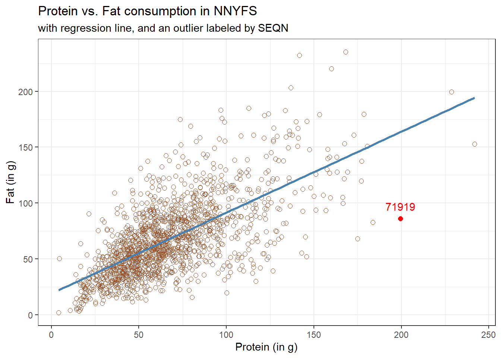

knitr::opts_chunk$set(comment = NA)
library(broom)
library(equatiomatic)
library(janitor)
library(kableExtra)
library(modelsummary)
library(patchwork)
library(tidyverse)
theme_set(theme_bw())12 Straight Line Models
12.1 Setup: Packages Used Here
12.2 Assessing A Scatterplot
Let’s consider the relationship of protein and fat consumption for children in the nnyfs data.
nnyfs <- read_rds("data/nnyfs.Rds")We’ll begin our investigation, as we always should, by drawing a relevant picture. For the association of two quantitative variables, a scatterplot is usually the right start. Each subject in the nnyfs data is represented by one of the points below. To the plot, I’ve also used geom_smooth to add a straight line regression model, which we’ll discuss later.
ggplot(data = nnyfs, aes(x = protein, y = fat)) +
geom_point(shape = 1, size = 2, col = "sienna") +
geom_smooth(method = "lm", formula = y ~ x,
se = FALSE, col = "steelblue") +
labs(title = "Protein vs. Fat consumption in NNYFS data",
subtitle = "with fitted straight line regression model",
x = "Protein (in g)", y = "Fat (in g)")
Here, I’ve arbitrarily decided to place fat on the vertical axis, and protein on the horizontal. Fitting a prediction model to this scatterplot will then require that we predict fat on the basis of protein.
In this case, the pattern appears to be:
- direct, or positive, in that the values of the \(x\) variable (
protein) increase, so do the values of the \(y\) variable (fat). Essentially, it appears that subjects who consumed more protein also consumed more fat, but we don’t know cause and effect here. - fairly linear in that most of the points cluster around what appears to be a pattern which is well-fitted by a straight line.
- moderately strong in that the range of values for
fatassociated with any particular value ofproteinis fairly tight. If we know someone’s protein consumption, that should meaningfully improve our ability to predict their fat consumption, among the subjects in these data. - that we see some unusual or outlier values, further away from the general pattern of most subjects shown in the data.
12.3 Highlighting an unusual point
Consider the subject with protein consumption close to 200 g, whose fat consumption is below 100 g. That’s well below the prediction of the linear model for example. We can identify the subject because it is the only person with protein > 190 and fat < 100 with BMI > 35 and waist.circ < 70. So I’ll create a subset of the nnyfs data containing the point that meets that standard, and then add a red point and a label to the plot.
# identify outlier and place it in nnyfs_temp1 tibble
nnyfs_temp1 <- nnyfs |>
filter(protein > 190 & fat < 100)
ggplot(data = nnyfs, aes(x = protein, y = fat)) +
geom_point(shape = 1, size = 2, col = "sienna") +
geom_smooth(method = "lm", se = FALSE, formula = y ~ x, col = "steelblue") +
geom_point(data = nnyfs_temp1, size = 2, col = "red") +
geom_text(data = nnyfs_temp1, label = nnyfs_temp1$SEQN,
vjust = -1, col = "red") +
labs(title = "Protein vs. Fat consumption in NNYFS",
subtitle = "with regression line, and an outlier labeled by SEQN",
x = "Protein (in g)", y = "Fat (in g)")
While this subject is hardly the only unusual point in the data set, it is one of the more unusual ones, in terms of its vertical distance from the regression line. We can identify the subject by printing (part of) the tibble we created.
nnyfs_temp1 |>
select(SEQN, sex, race_eth, age_child, protein, fat) |> kable()| SEQN | sex | race_eth | age_child | protein | fat |
|---|---|---|---|---|---|
| 71919 | Female | 2_White Non-Hispanic | 14 | 199.33 | 86.08 |
Now, does it seem to you like a straight line model will describe this protein-fat relationship well?
12.4 Adding a Scatterplot Smooth using loess
Next, we’ll use the loess procedure to fit a smooth curve to the data, which attempts to capture the general pattern.
ggplot(data = nnyfs, aes(x = protein, y = fat)) +
geom_point(shape = 1, size = 2, col = "sienna") +
geom_smooth(method = "loess", se = FALSE, formula = y ~ x, col = "red") +
geom_smooth(method = "lm", se = FALSE, formula = y ~ x, col = "steelblue") +
labs(title = "Protein vs. Fat consumption in NNYFS",
subtitle = "with loess smooth (red) and linear fit (blue)",
x = "Protein (in g)", y = "Fat (in g)")
This “loess” smooth curve is fairly close to the straight line fit, indicating that perhaps a linear regression model might fit the data well.
A loess smooth is a method of fitting a local polynomial regression model that R uses as its default smooth for scatterplots with fewer than 1000 observations. Think of the loess as a way of fitting a curve to data by tracking (at point x) the points within a neighborhood of point x, with more emphasis given to points near x. It can be adjusted by tweaking two specific parameters, in particular:
- a
spanparameter (defaults to 0.75) which is also called \(\alpha\) in the literature, that controls the degree of smoothing (essentially, how large the neighborhood should be), and - a
degreeparameter (defaults to 2) which specifies the degree of polynomial to be used. Normally, this is either 1 or 2 - more complex functions are rarely needed for simple scatterplot smoothing.
In addition to the curve, smoothing procedures can also provide confidence intervals around their main fitted line. Consider the following plot, which adjusts the span and also adds in the confidence intervals.
p1 <- ggplot(data = nnyfs, aes(x = protein, y = fat)) +
geom_point(shape = 1, size = 2, col = "sienna") +
geom_smooth(method = "loess", span = 0.75, se = TRUE,
col = "red", formula = y ~ x) +
labs(title = "loess smooth (span = 0.75)",
x = "Protein (in g)", y = "Fat (in g)")
p2 <- ggplot(data = nnyfs, aes(x = protein, y = fat)) +
geom_point(shape = 1, size = 2, col = "sienna") +
geom_smooth(method = "loess", span = 0.2, se = TRUE,
col = "red", formula = y ~ x) +
labs(title = "loess smooth (span = 0.2)",
x = "Protein (in g)", y = "Fat (in g)")
p1 + p2 +
plot_annotation(title = "Impact of adjusting loess smooth span: NNYFS")
By reducing the size of the span, the plot on the right shows a somewhat less “smooth” function than the plot on the left.
12.5 Equation for a Linear Model
Returning to the linear regression model, how can we, mathematically, characterize that line? As with any straight line, our model equation requires us to specify two parameters: a slope and an intercept (sometimes called the y-intercept.)
To identify the equation R used to fit this line (using the method of least squares), we use the lm command
m <- lm(fat ~ protein, data = nnyfs)
m
Call:
lm(formula = fat ~ protein, data = nnyfs)
Coefficients:
(Intercept) protein
18.8945 0.7251 So the fitted line contained in model m can be specified as
\[ \mbox{fat} = 18.8945 + 0.7251 \mbox{ protein } \]
We can use the extract_eq() function from the equatiomatic package to pull the equation out of this model, as well. Unfortunately, if I run this code, it breaks in the PDF version of this book. So I’ll demonstrate in class, and just show the results here without actually executing the code.
extract_eq(m, use_coefs = TRUE)\[ \operatorname{\widehat{fat}} = 18.89 + 0.73(\operatorname{protein}) \]
12.6 Summarizing the Fit of a Linear Model
A detailed summary of the fitted linear regression model is also available.
summary(m)
Call:
lm(formula = fat ~ protein, data = nnyfs)
Residuals:
Min 1Q Median 3Q Max
-77.798 -14.841 -2.449 13.601 110.597
Coefficients:
Estimate Std. Error t value Pr(>|t|)
(Intercept) 18.8945 1.5330 12.32 <2e-16 ***
protein 0.7251 0.0208 34.87 <2e-16 ***
---
Signif. codes: 0 '***' 0.001 '**' 0.01 '*' 0.05 '.' 0.1 ' ' 1
Residual standard error: 25.08 on 1516 degrees of freedom
Multiple R-squared: 0.4451, Adjusted R-squared: 0.4447
F-statistic: 1216 on 1 and 1516 DF, p-value: < 2.2e-1612.6.1 Using modelsummary()
Another available approach to provide a summary is to use the modelsummary() function from the modelsummary package. Although this is mostly used for comparing multiple models, we can obtain good results for just one, like this.
modelsummary(m)| Model 1 | |
|---|---|
| (Intercept) | 18.895 |
| (1.533) | |
| protein | 0.725 |
| (0.021) | |
| Num.Obs. | 1518 |
| R2 | 0.445 |
| R2 Adj. | 0.445 |
| AIC | 14094.2 |
| BIC | 14110.1 |
| Log.Lik. | −7044.082 |
| F | 1215.779 |
| RMSE | 25.06 |
The modelsummary vignette provides a lot of information on how to amplify these results.
12.6.2 Plotting coefficients with modelplot()
Also from the modelsummary package, the modelplot() function can be of some help in understanding the size of our coefficients (and their standard errors).
modelplot(m) +
labs(title = "Model m coefficients")
12.7 Summaries with the broom package
If we want to use them to do anything else, the way we’ll usually summarize the estimated coefficients of a linear model is to use the broom package’s tidy function to put the coefficient estimates into a tibble.
tidy(lm(fat ~ protein, data = nnyfs),
conf.int = TRUE, conf.level = 0.95) |>
kbl(digits = 3) |>
kable_styling(full_width = FALSE)| term | estimate | std.error | statistic | p.value | conf.low | conf.high |
|---|---|---|---|---|---|---|
| (Intercept) | 18.895 | 1.533 | 12.325 | 0 | 15.887 | 21.902 |
| protein | 0.725 | 0.021 | 34.868 | 0 | 0.684 | 0.766 |
We can also summarize the quality of fit in a linear model using the broom package’s glance function. For now, we’ll focus our attention on just one of the many summaries available for a linear model from glance: the R-squared value.
glance(lm(fat ~ protein, data = nnyfs)) |>
select(r.squared) |>
kbl(digits = 3) |>
kable_styling(full_width = FALSE)| r.squared |
|---|
| 0.445 |
We’ll spend a lot of time working with these regression summaries in this course.
12.8 Key Takeaways from a Simple Regression
For now, it will suffice to understand the following:
- The outcome variable in this model is fat, and the predictor variable is protein.
- The straight line model for these data fitted by least squares is
fat= 18.895 + 0.725protein - The slope of
proteinis positive, which indicates that asproteinincreases, we expect thatfatwill also increase. Specifically, we expect that for every additional gram of protein consumed, the fat consumption will be 0.725 gram larger. - The multiple R-squared (squared correlation coefficient) is 0.445, which implies that 44.5% of the variation in
fatis explained using this linear model withprotein. - This also implies that the Pearson correlation between
fatandproteinis the square root of 0.445, or 0.667. More on the Pearson correlation soon.
So, if we plan to use a simple (least squares) linear regression model to describe fat consumption as a function of protein consumption in the NNYFS data, does it look like a least squares (or linear regression) model will be an effective choice?
One way to study this is through looking at correlation: which is our next subject.